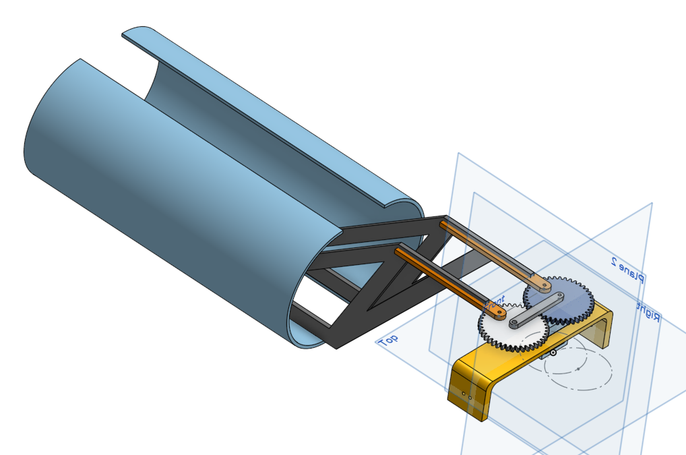
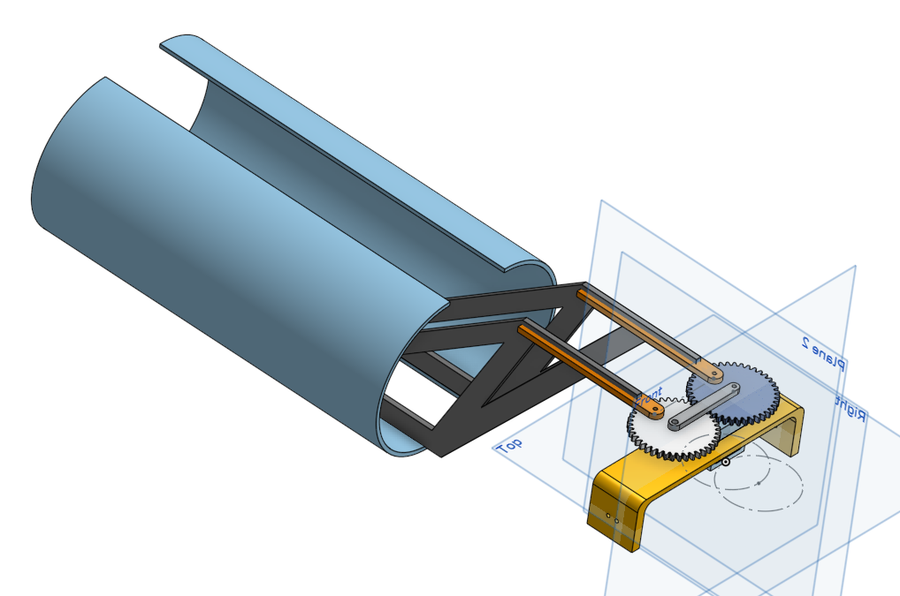

Summary
I worked in a group of 4 to create a fully automated driving robot from scratch in 6 weeks! The robot used reflectance sensors to follow electrical tape along a race course, where it raced head-to-head against other robots in a Mario Kart themed competition.

Rules and Setup
We begin with the competition surface:
1. The competition is a series of 1v1 races, where each robot starts at the same time on on of the light orange platforms.
2. The winner is decided by points, with 3 points gained per lap, and one point gained for every bonus block or coin picked up. Picking up a bomb on the other hand forces the robot to reset its lap, and lose all points gained during the lap.
3. The robot is free to choose any path on the course, such as choosing to skip the bridge by going on the zipline, or taking a shortcut through the rocks.
4. The full rules can be found here!
Designing
We had numerous early designs and prototypes as we explored a lot of different possibilities. Should we focus on picking up blocks? Take shortcuts? How can we avoid the bomb? Due to the limited timeframe, we knews we would have to make tough choices on what tradeoffs to take. For example, we chose to avoid taking shortcuts as any slight variation in how our car hit the field of rocks caused too much inconsistency to easily deal with, despite the increase in speed.
Prototyping
Throughout the entire project, we created numerous physical and CAD prototypes to test our ideas, and to ensure certain components were working as we planned.
Our initial plan was to take the normal path, and to jump down onto the rocks where the zipline is before readjusting. However, it was very difficult for this to be consistent, as the angle of impact onto the rocks and other similar factors caused the car to land in unpredictable locations and orientations. In the end, my team chose to take the default path, and optimize it as far as possible.


There were also a lot of problems with picking up blocks. AS we tested, we found that any designs featuring a claw were simply too slow; gaining 1 point for a block but slowing down considerably didn't make up for the 3 points we could gain by getting an extra lap in. Furthermore, picking up blocks also means we run the risk of picking up a bomb. Even if we created a detector to ensure we are only picking up blocks, that is more time wasted. These factors helped us decide to build a very fundamentals-focused car focused on consistency.
 

Electronics
While all groupmates were able to gain experience in all aspects of the project, my main focus was on the circuitry of the robot. I created all circuit boards on the robot, and worked together with Howard Li, another member of my group, to program the and integrate the microcontroller (an STM32).
The arguably single most important circuit on this robot was our H-Bridge circuit, responsible for controlling the motors. The board contains 2 H-Bridges, one per motor, as we wanted our wheels to turn independantly of each other to allow us to have sharper turns by having wheels spin in opposite directions, as well as more fine control on adjusting our angle.
This board gave me a lot of issues: It did not work the first time I soldered it. All my connections seemed correct, although checking with an oscilloscope showed odd behaviour on our signals around the transistors. Okay, perhaps there was something wrong with the MOSFETS. I swapped out the transistors with fresh ones. Nothing. Okay, maybe I just couldn't identify what was wrong. So I resoldered the board a second time, and tested both sets of MOSFETS. Nothing. And nothing on the third attempt either. Out of frustration, I grabbed another set of MOSFETs, and found that everything worked perfectly. Both sets of the MOSFETs I was using were faulty. :( This taught me a lot about debugging and testing, and making sure to TRIPLE CHECK when something might be faulty.
The other circuits were incredibly important as well, with our reflectance sensors being necessary to track the position of the tape, and our power distribution board handling transforming and sending power from our battery to our various components.
Driving
In order to drive, we first needed to track the electrical tape. Since the tape was black on a white background, we were able to use a system of reflectance sensors to keep track of the relative positions of the front of our car and the tape. We had 4 total sensors on the car, all at the front in a line, with 2 spaced out on the left side of the front, and 2 on the right. It is also important to know that all sensors were spaced out to be aslightly less than the width of the tape apart. Then, we know that whichever sensor had the highest reading would indicate location of the tape! If both central sensors read tape, then we were perfectly straight. If only one sensor read the tape, then we were a little off and could implement a weak correction. And if one of the outer sensors read the tape, then we knew we erre really far off and need to correct more strongly. Here is a video of our car in action! (The video begins in slo-mo)
Results
Our robot performed great on competition day! We beat our first round opponent handily, blowing past the groups stage and making it all the way to semifinals! This was an incredible experience, and I would like to thank Emily Xue, Daniel Song, and Howard Li for being wonderful groupmates over the project!